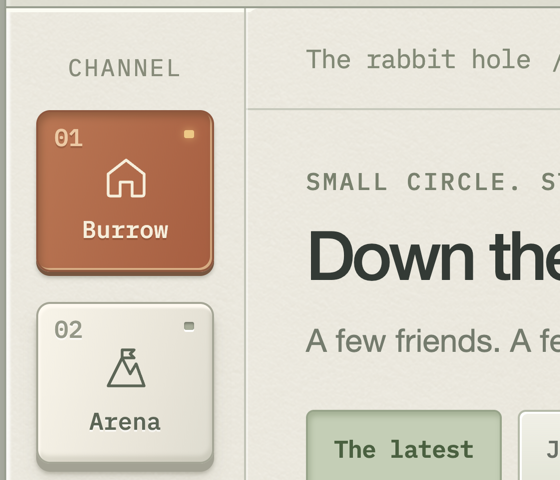
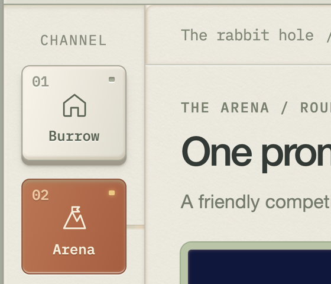
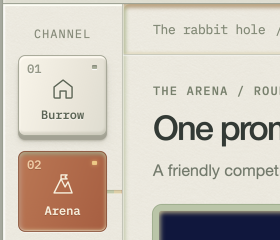
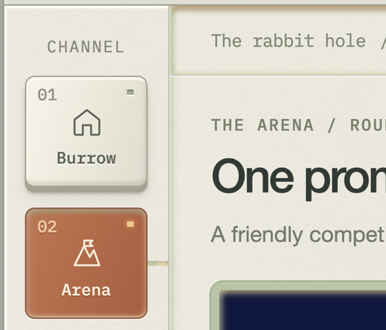
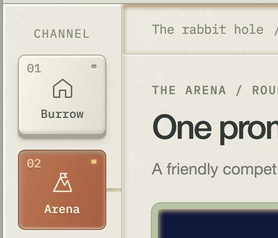
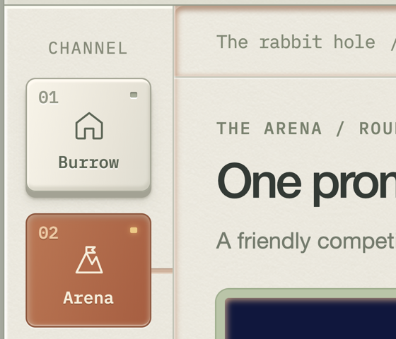

Left: T9 specimen (reference-ux, Burrow→Arena, 0.1× playback, converted time). Right: T11 egui spike (Subscribe, real time, ms after commit). Both crops 560×480 px at 2×.

T9 -21 ms | T11 -19 ms

T9 82 ms | T11 +84 ms
T9 174 ms | T11 +175 ms
T9 265 ms | T11 +267 ms
T9 351 ms | T11 +350 ms
T9 439 ms | T11 +439 ms

T9 523 ms | T11 +522 ms
T9 608 ms | T11 +614 ms
T9 695 ms | T11 +698 ms

T9 780 ms | T11 +781 ms

T9 867 ms | T11 +864 ms
T9 954 ms | T11 +950 ms
T9 1041 ms | T11 +1042 ms

T9 1126 ms | T11 +1128 ms
T9 1207 ms | T11 +1206 ms
T9 1282 ms | T11 +1275 ms
T9 1358 ms | T11 +1358 ms